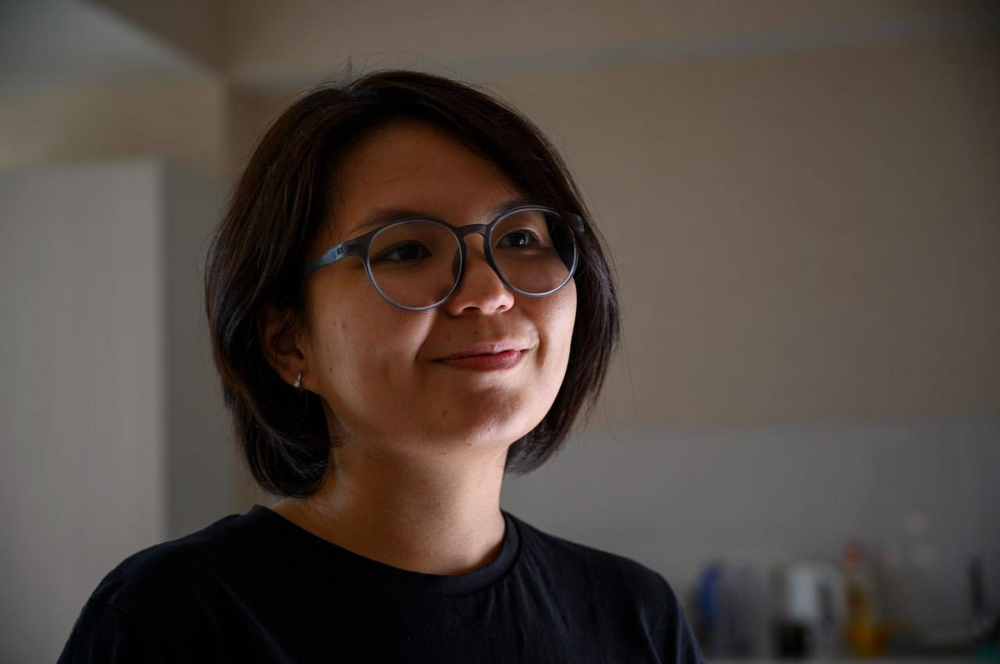

Creative producer, researcher, scriptwriter and director. Transforming complex data and cultural narratives into compelling visual stories for international organizations and national projects. Креативный продюсер, исследователь, сценарист и режиссер. Трансформирую сложные данные и культурные нарративы в убедительные визуальные истории для международных организаций и национальных проектов.

I'm a creative producer, researcher and scriptwriter from Kyrgyzstan with experience spanning documentary filmmaking, animation, edutainment and commercial video production. Я креативный продюсер, исследователь и сценарист из Кыргызстана с опытом в документальном кино, анимации, edutainment и коммерческом видеопроизводстве.
My work sits at the intersection of deep research and storytelling - I transform complex expert content, archival data and social research into accessible, engaging visual formats. From a national educational series watched by thousands of students to EU-funded animation projects, I bring analytical rigor and narrative craft to every production. Моя работа находится на стыке глубокого исследования и сторителлинга - я трансформирую сложный экспертный контент, архивные данные и социальные исследования в доступные, вовлекающие визуальные форматы.
I've partnered with OSCE, GIZ, USAID, American Councils, International Alert, IWPR, the European Union and other international organizations - often earning repeat contracts through quality delivery. Я сотрудничала с ОБСЕ, GIZ, USAID, American Councils, International Alert, IWPR, Европейским Союзом и другими международными организациями - часто получая повторные контракты благодаря качеству реализации.
27-episode animated series used in schools across Kyrgyzstan for state exam preparation (ORT/NCT). I led deep research with historians, transformed academic content into story-first narratives, and designed the visual logic - historical maps, timelines, genealogical trees - making centuries of history accessible. Thousands of students use these videos annually as their primary study resource.27 серий анимационного цикла, который используется в школах по всей стране для подготовки к гос. экзаменам (ОРТ/НЦТ). Провела глубокий ресерч с историками, трансформировала академический контент в нарратив и спроектировала визуальную логику - карты, хронологии, генеалогические древа. Тысячи учеников ежегодно используют сериал как основной ресурс.
A modern animated adaptation of the Kyrgyz national epic for children and youth. I studied the epic in multiple variants, developed all scripts for 10 episodes, and oversaw creative direction - transforming archaic narrative into dynamic modern storytelling while preserving cultural authenticity.Современная анимационная адаптация национального эпоса. Изучила эпос в нескольких вариантах, разработала сценарии всех 10 серий и руководила креативным направлением - трансформация архаичного повествования в современный формат с сохранением культурной аутентичности.
A one-woman-crew documentary on the history of "Kiyal" - the birthplace of Kyrgyz craftsmanship. Full cycle: archival research, interviews with master artisans, production and post-production. Awarded a State Certificate for contribution to cultural preservation.Документальный фильм в формате one-woman crew об истории «Кыяла» - колыбели кыргызского ремесленничества. Полный цикл: архивное исследование, интервью с мастерами, продакшн и пост-продакшн. Награждена государственной грамотой за вклад в сохранение наследия.
Socio-philosophical animation reimagining the "Mankurt" legend for modern civil society. I co-authored the concept, wrote the winning grant proposal for ALDA/EU international competition, developed the multi-layered screenplay, and led creative direction throughout production.Социально-философская анимация, переосмысляющая легенду о «Манкурте». Соавтор концепции, автор грантовой заявки, победившей в международном конкурсе ALDA/ЕС, сценарист проекта.
188 video lectures with 4 subject matter experts, plus a dedicated web platform. Full cycle management - team assembly, expert coordination, methodology, filming, site development. Delivered on deadline for OSCE.188 видеолекций с 4 экспертами и специализированный сайт. Управление полным циклом - от сбора команды до запуска. Сдано в срок для ОБСЕ.
25 training video scripts on ESG principles for banking professionals. I analyzed 100+ hours of expert seminars, international climate strategies, and transformed complex financial content into clear, structured educational scripts.25 сценариев обучающего видеокурса по ESG-принципам. Проанализировала более 100 часов семинаров, международные климатические стратегии и трансформировала сложный контент в структурированные сценарии.
Social animation addressing bride kidnapping and domestic violence. Created ethical storylines from real social challenges, coordinated illustrators and voice actors, managed full production. Received exceptional feedback from International Alert.Социальная анимация по темам кражи невест и домашнего насилия. Создала этичные сюжеты на основе реальных вызовов, координировала команду. Высокая оценка от International Alert.
Four consecutive projects (50+ videos) for American Councils for International Education. After flawless first delivery, invited to continue without competitive tender - a testament to quality and reliability.Четыре последовательных проекта (50+ роликов) для American Councils. После безупречной реализации - приглашение продолжить без тендера.
"Transforming complex research and data into stories that educate, move and inspire action." "Трансформирую сложные исследования и данные в истории, которые обучают, вдохновляют и побуждают к действию."
Video documentation of the technically complex melange neutralization process. After successful first phase, selected for second phase - confirming trusted partner status with OSCE.Видеофиксация технически сложного процесса нейтрализации меланжа. После успешной первой фазы - выбраны для второй, подтверждение статуса проверенного партнера ОБСЕ.
Two social animation videos transforming research data on women's migration into engaging narrative - humanizing statistics through characters and storylines.Два анимационных ролика - трансформация данных исследований о женской миграции в вовлекающий нарратив, «очеловечивание» статистики через персонажей и сюжеты.
20 animated video lessons for CABAR.asia media school covering analytics, fact-checking and data journalism. Became the foundation for IWPR's remote education across Central Asia.20 анимационных видеоуроков по аналитике, фактчекингу и дата-журналистике. Стали базой дистанционного обучения IWPR в Центральной Азии.
Six comprehensive video lessons for teachers combining expert lectures with live classroom footage. Adapted complex pedagogical methods into accessible video format for Chemonics International.Шесть видеоуроков для педагогов, сочетающих экспертные лекции с реальными съемками из классов. Адаптация педагогических методик для Chemonics International.
Professional video report documenting the digitization of museum exhibitions - demonstrating the transition of physical art into digital format through modern technology.Видеоотчет о процессе оцифровки музейных выставок - переход физического искусства в цифровой формат.
An advocacy video project highlighting the invisible contributions of migrant women to social stability in Kyrgyzstan. End-to-end production from concept to post-production.Адвокационный видеопроект о вкладе женщин-мигрантов в социальную стабильность Кыргызстана. Полный цикл от концепции до пост-продакшна.